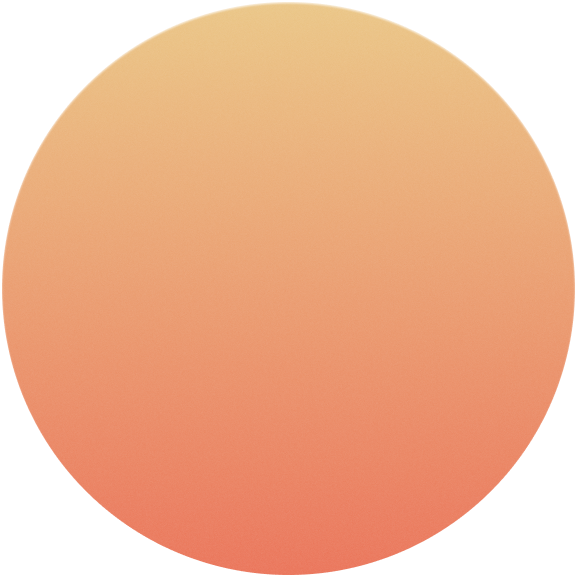
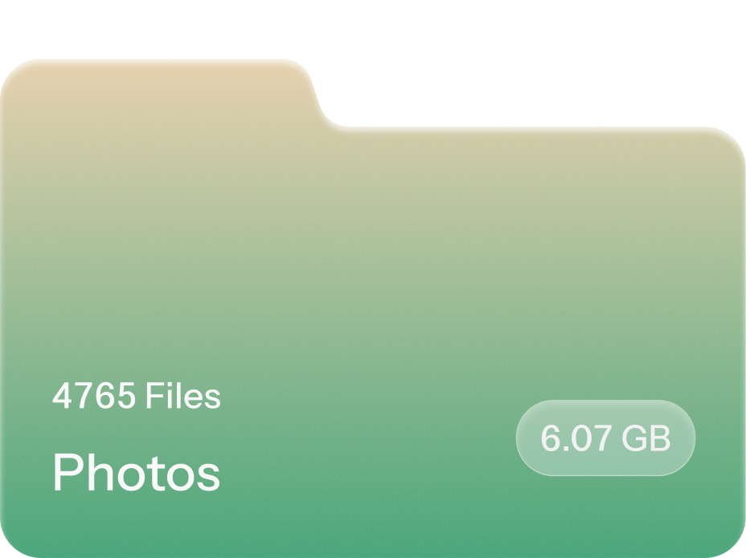
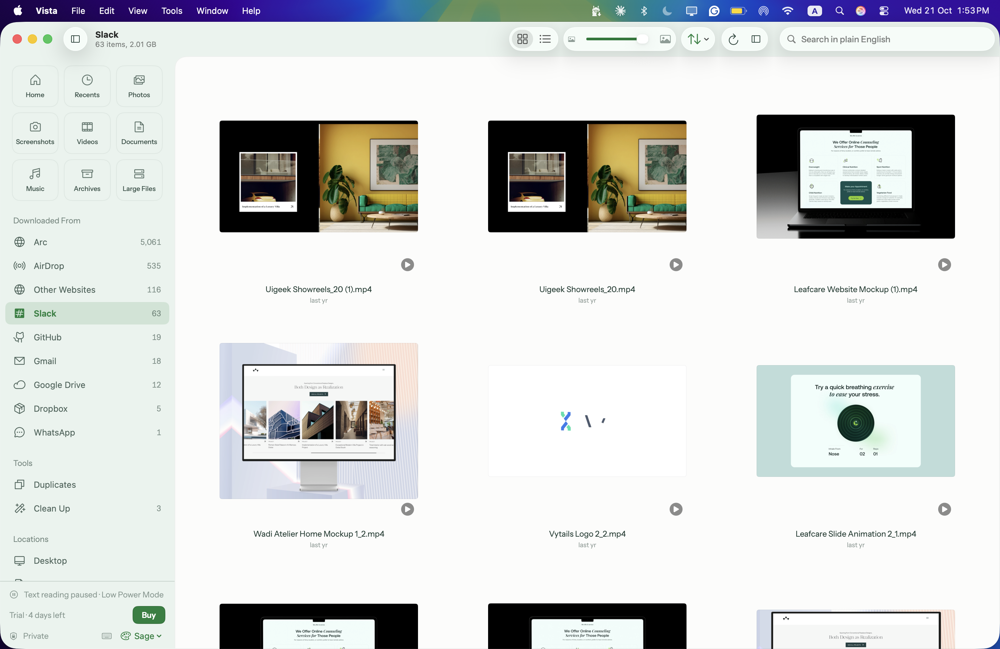
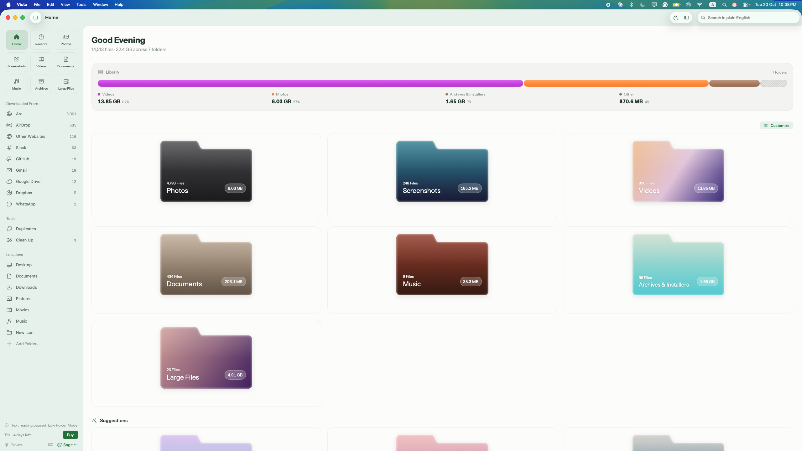

A visual file browser for macOS
See your files, not filenames.
Vista shows your files as thumbnails, sorted by kind. Give each folder its own color and shape, and search the words inside screenshots and PDFs.
Vista shows thumbnails you can recognize at a glance, not long lists of filenames. It sorts your folders by kind, and it never sends a file off your Mac.
-
01
Visual
Large thumbnails instead of filenames, sorted into photos, screenshots, documents and videos.
-
02
Yours
24 colors, 7 folder shapes and 31 icons, in a Light, Dark or Sage theme.
-
03
Private
Search, text recognition and duplicate detection run on your Mac. No account, no Wi‑Fi needed.
Make it yours
Color, shape and
name every folder.
Vista sorts your files into folders by kind. Each folder can have its own color or gradient, shape, icon and name.

24 colors and gradients

7 folder shapes
31 icons
On-device search
Find the words
inside your files.
Press / and type what you remember, like “screenshots with wifi.” Vista searches filenames and the text inside screenshots and PDFs, and lists the best matches first. The search runs on your Mac.

Text inside screenshots and PDFs

Downloaded From: Gmail, Slack, AirDrop
Viewer
Browse like Photos.
Photos and videos open full size. Zoom, pan, swipe to the next item, and select text inside an image with Live Text.
Keyboard
Move like Gmail.
Single-key shortcuts and the arrow keys move you between categories and files, and open the viewer. You can use Vista without touching the mouse.
Clean Up
Clean up.
Undo anything.
Vista finds old downloads, leftover installers, duplicates and near-identical photos. You review each list before anything moves. Files go to the Trash, and Undo brings them back.
Themes
Light, Dark, or Sage.
Light and Dark look like the rest of macOS. Sage is Vista’s own theme, in soft green.

Privacy
Works offline.
Stays on your Mac.
Indexing, text recognition, and duplicate detection run entirely on your Mac — with or without Wi‑Fi.
- No account
- No cloud
- No tracking
- Offline license
Pricing
Pay once.
Keep it.
Try everything free for 14 days. Then buy it once, with free updates.
What you get
Every feature.
Nothing to renew.
Buy once and every feature is yours, with free updates — no account, no cloud, and nothing that expires.
- Every feature
- Free updates
- No account
- No cloud
- Works offline
- No tracking
Everything runs on your Mac. Nothing is uploaded, and your license works without a connection.
Vista for Mac
Early birdOne payment. Early bird for the first 300 licenses, then $29.
Try free for 14 days first · macOS 14 or later
FAQ
Questions
Does Vista reorganize my folders?
No. Vista changes how you see your files, not where they live. Your folders stay exactly as they are.
Which folders does Vista look at?
Desktop, Documents, Downloads, Pictures, Movies, and Music, plus any folder you add.
Can Vista delete my files?
No. Clean Up only moves files you’ve reviewed to the Trash, and Undo brings them back.
Does anything leave my Mac?
No. Search, text recognition, and duplicate detection run on your Mac. There’s no account and no cloud.
Does Vista work without internet?
Yes. Everything runs locally, and your license works without a connection.
Is this a subscription?
No. You pay once and get free updates.
Why is it $19 and not $29?
The first 300 licenses are $19 as a thank-you to early users. After that it’s $29 — still one payment, still with free updates.
What do I need?
A Mac running macOS 14 Sonoma or later.